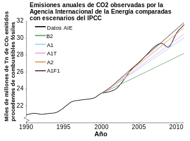
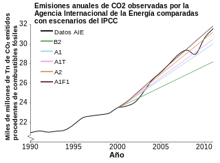

El término Calentamiento Global se refiere al aumento gradual de las temperaturas de la atmósfera y océanos de la Tierra que se ha detectado en la actualidad, además de su continuo aumento que se proyecta a futuro. Nadie pone en duda el aumento de la temperatura global, lo que todavía genera controversia es la fuente y razón de este aumento de la temperatura. Aún así, la mayor parte de la comunidad científica asegura que hay más que un 90% de certeza que el aumento se debe al aumento de las concentraciones de gases de efecto invernadero por las actividades humanas que incluyen deforestación y la quema de combustibles fósiles como el petróleo y el carbón. Estas conclusiones son avaladas por las academias de ciencia de la mayoría de los países industrializados. Cuando hablamos del calentamiento global hay que hacerlo con mucho cuidado y desde un punto de vista crítico. La mediatización ha hecho mucho daño al hecho de que nuestro planeta está calentándose más rápidamente de lo que esperábamos. La exageración y la desinformación ha restado importancia a una realidad. El calentamiento global es un hecho avalado por innumerables pruebas de carácter científico. Que su origen sea antropocéntrico, es decir, que lo hayamos causado nosotros, es otro tema distinto y todavía fruto de numerosos debates en la comunidad científica. Pero, como decíamos, está claro que el 2014 fue el año más cálido del que hemos tenido registro. La tendencia general muestra que la Tierra se sigue calentando y a un ritmo récord.
El cambio climático en España
Según la encuesta de 2007 de ecología y medio ambiente del CIS, más de la mitad de los españoles se consideran poco informados acerca de temas del medio ambiente, y un 48% además piensa que aunque los españoles están interesados, no están suficientemente preocupados por los problemas del medio ambiente junto a un 29,3% que dice que tienen muy poco interés y preocupación por estos problemas. Estos datos chocan frontalmente tanto con las ideas apocalípticas de muchos respecto al cambio climático, como con las de los escépticos. Para formarse una opinión del tema es necesario tener una conciencia ecológica, fomentar una educación cívica y respetuosa con el medio ambiente, y conocer algunos datos básicos que respalden nuestros argumentos. También según este estudio, a la pregunta de cuáles son los dos problemas más importantes, relacionados con el medio ambiente, en el mundo, la respuesta mayoritaria es el cambio climático, según más de una cuarta parte de la población. A este le siguen otros estrechamente relacionados: la contaminación en general (15.2%), la contaminación atmosférica (10.3%) y la contaminación industrial (9.6). Pero el dato realmente alarmante de esta encuesta es que el estado del medio ambiente perjudica la salud de la población bastante para casi la mitad de la población y mucho a uno de cada cuatro. Quizá de ahí que los hábitos de consumo y ciertas actitudes y actividades como el reciclado se estén popularizando cada vez más. Este mismo estudio revela datos esperanzadores y arroja muy buenas cifras respecto a la conciencia ecológica de la población española.
Septiembre de 2015 tuvo la temperatura más alta de un mes de septiembre de la historia. De los 1629 registros de temperaturas medias mensuales, seis meses de 2015 se encuentran entre los 10 registros de temperatura mensuales más altos de sus respectivos promedios, si sumamos diciembre de 2014 los últimos 7 meses se colocan en este ranking.
DATOS PRINCIPALES SOBRE EL CALENTAMIENTO GLOBAL